Size
Pain
기존 컨트롤러가 커서 팔걸이 주변에서 걸리적거림
Solution
길이와 폭을 모두 줄인 형상
수전동휠체어 H500의 컨트롤러와 인휠모터 휠을 디자인했습니다.
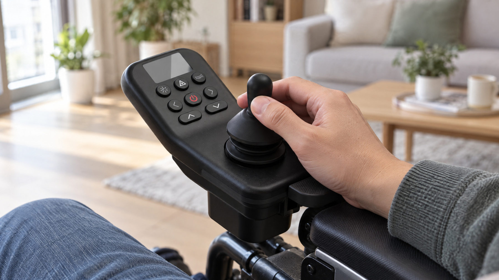
Precise control for a weak grip, a drive unit inside one wheel
컨트롤러는 기존 일자형 컨트롤러보다 가시성을 높이도록 디스플레이와 조작부의 각도를 세우고, 손 힘이 약한 사용자도 놓치지 않고 정확하게 조작할 수 있도록 손을 받친 채 쓰는 형태로 만들었습니다. 휠은 구동부를 휠 안에 담은 인휠모터 휠로, 휠체어 시장에도 컬러 선택 니즈가 있음을 확인하고 컬러 커스텀이 가능한 컨셉으로 진행했습니다.
Compared with conventional flat controllers, the display and controls are angled up for better visibility, and the controller is used with the hand resting on it so that users with a weak grip can operate it precisely. The wheel puts the drive unit inside the wheel itself; having confirmed that wheelchair users also want colour choice, it was developed as a colour-customisable concept.
손 힘이 약한 사용자도 놓치지 않고 정확하게 조작하는 컨트롤러
노인 휠체어 사용 만족도 연구와 기존 컨트롤러 사용 검토에서 세 가지 문제를 찾았습니다.
Three problems were found in research on older users and a review of the existing controller.
Pain
기존 컨트롤러가 커서 팔걸이 주변에서 걸리적거림
Solution
길이와 폭을 모두 줄인 형상
Pain
버튼을 잘못 누르거나, 누르는 손에 화면이 가려짐
Solution
화면 → 버튼 → 조이스틱 순 배치, 버튼 최소 14mm · 간격 확보
Pain
손 힘이 약하면 조이스틱을 놓치거나 손이 쉽게 지침
Solution
손을 받친 채 조작하는 팜레스트
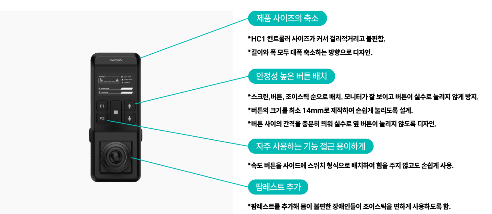
문제를 형상 기준으로 옮겼습니다. 크기 축소, 안전한 버튼 배치, 자주 쓰는 속도 버튼은 측면 스위치로, 그리고 팜레스트 추가입니다.
The problems became form criteria: smaller size, safe button layout, a side speed switch and a palm rest.
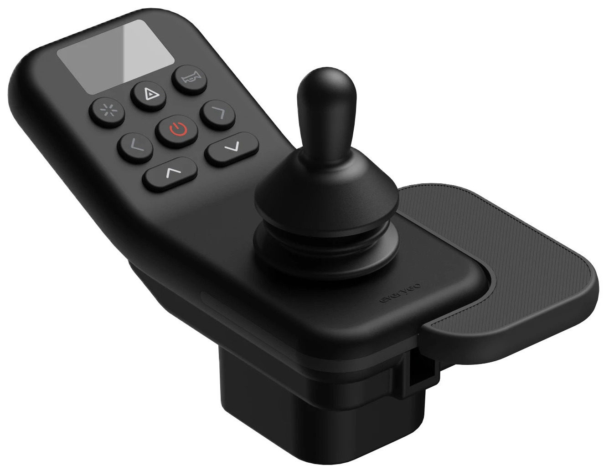
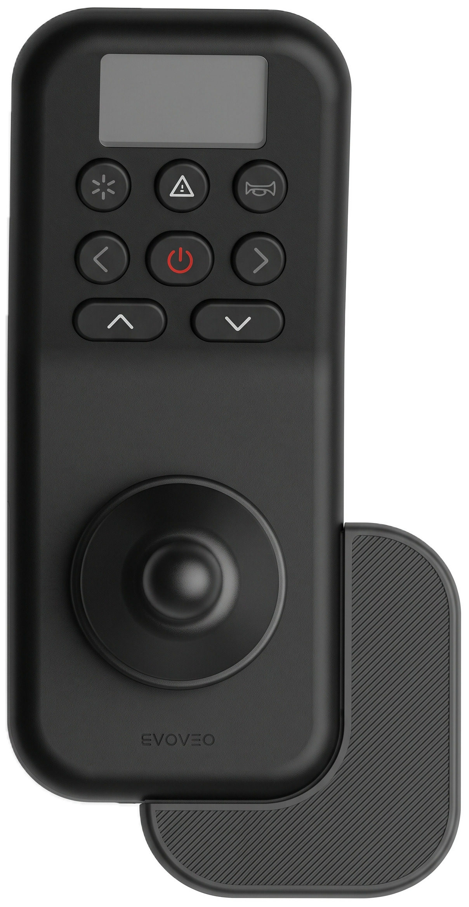
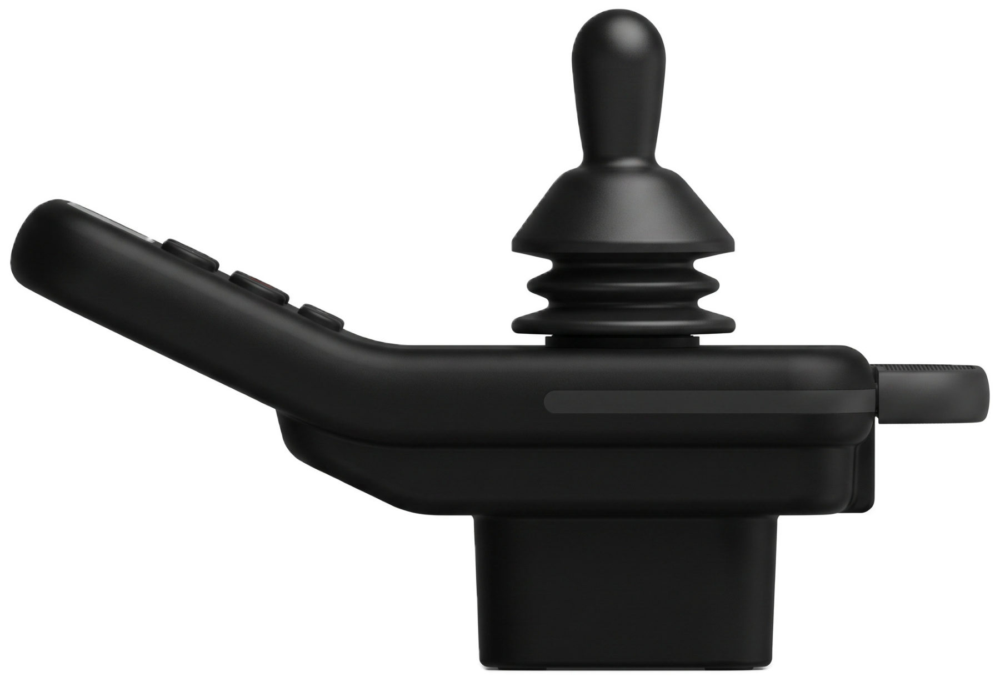
디스플레이와 조작부의 각도를 세워 기존 일자형보다 화면이 잘 보이게 했습니다. 레드 전원 버튼을 가운데에 두고 라이트·비상등·경적을 기능별로 묶었고, 자주 쓰는 속도 버튼은 밝은 명도로, 긴급 버튼은 밝은 색으로 구분했습니다. 팜레스트는 탈착·좌우 반전이 되어 왼손잡이도 쓸 수 있고, 조이스틱은 기성품을 써서 원가를 줄였습니다.
Angled display and controls, buttons grouped around the red power key, a detachable reversible palm rest and an off-the-shelf joystick.
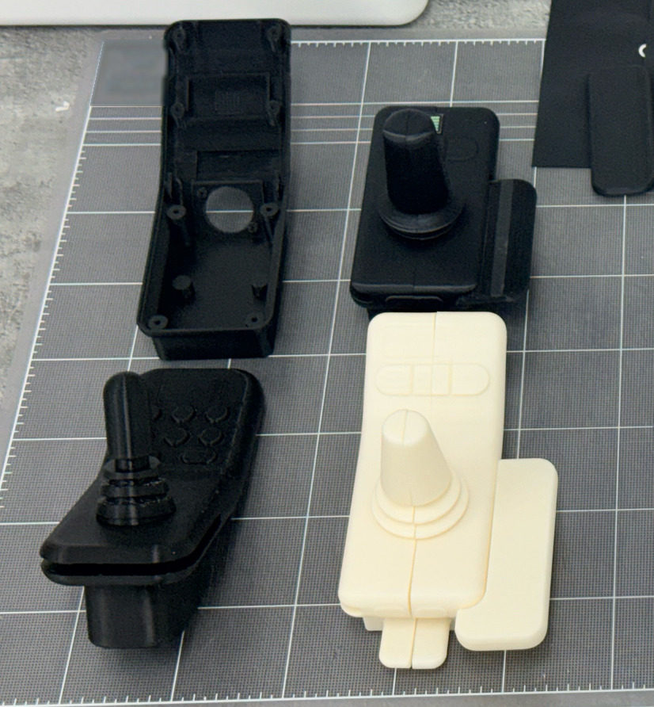
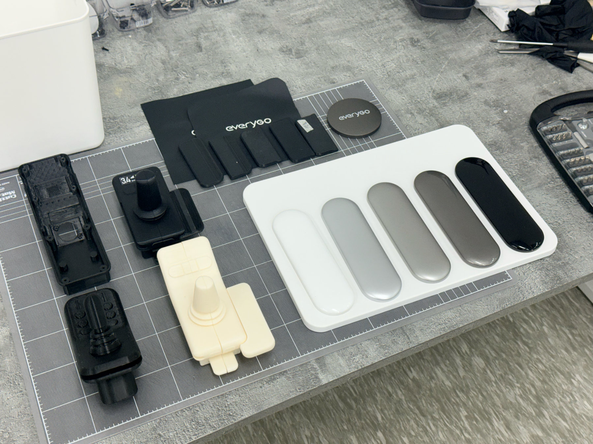
3D 프린팅 목업을 직접 쥐고 조작하며 손 크기에 맞는 형상과 버튼 배치를 다듬었습니다.
3D-printed mock-ups were held and operated to refine the form and button layout.
구동부를 휠 하나에 담고, 컬러를 골라 '환자용'처럼 보이지 않게 한 휠
기존 전동 휠을 직접 써 보고, 휠체어 사용자의 외형 만족도를 함께 봤습니다.
The existing powered wheel was reviewed alongside users' satisfaction with appearance.
Pain
손잡이와 휠 사이가 13mm라 손가락이 들어가지 않아 수동 주행이 어려움
Solution
간격 20mm로 조정
Pain
모터가 손잡이 바깥으로 돌출돼 부딪히면 파손 위험
Solution
모터를 손잡이 안쪽, 허브에 배치
Pain
만족도 항목 중 '디자인·외형' 불만족이 가장 높음
Solution
무채색 바탕에 포인트 컬러를 바꿔 다는 구조
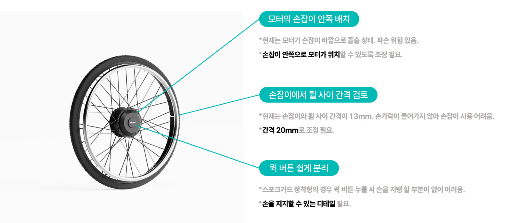
모터 위치, 손잡이 간격, 탈착 버튼 조작을 형상 기준으로 삼았습니다.
Motor position, hand-rim gap and quick-release access set the criteria.
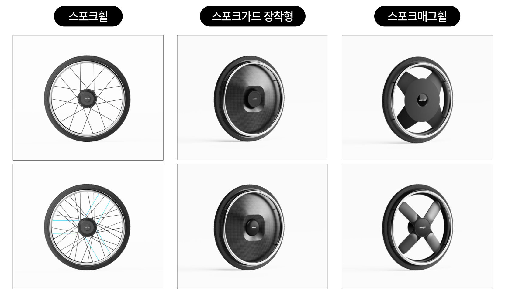
스포크휠·스포크가드 장착형·스포크매그휠 세 유형을 2안씩 비교했습니다. 작은 금형 하나로 스포크 세 개를 모두 덮고, 그 파트만 바꿔 컬러를 바꿀 수 있는 3-스포크 매그휠을 골랐습니다.
Three wheel types were compared; a 3-spoke mag wheel whose inserts come from one small mould was chosen.
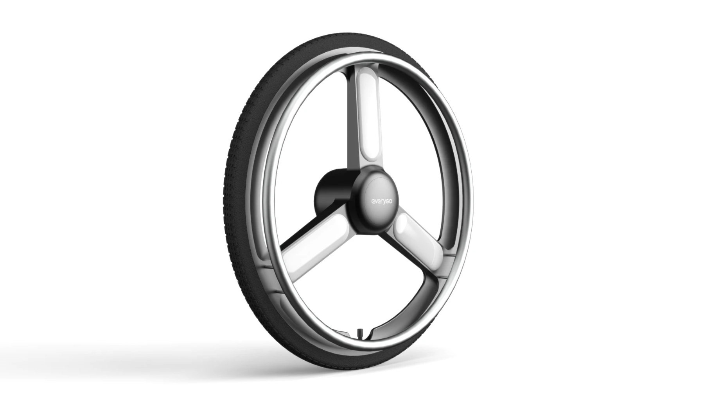
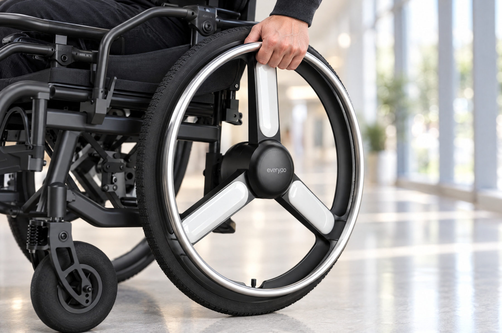
인휠모터를 허브에 담아 휠 하나로 구동부를 완결했습니다. 스포크 인서트는 원하는 컬러로 바꿔 달 수 있고, 메탈 핸드림은 손으로 밀 때를 고려해 두께와 휠과의 간격을 정했습니다.
The motor sits in the hub; spoke inserts swap colour; the metal hand rim is sized for manual pushing.
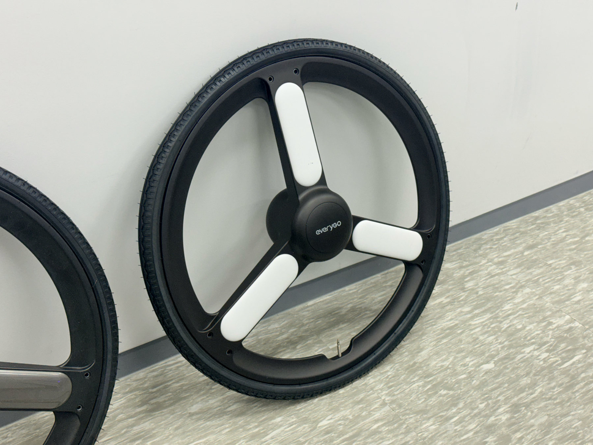
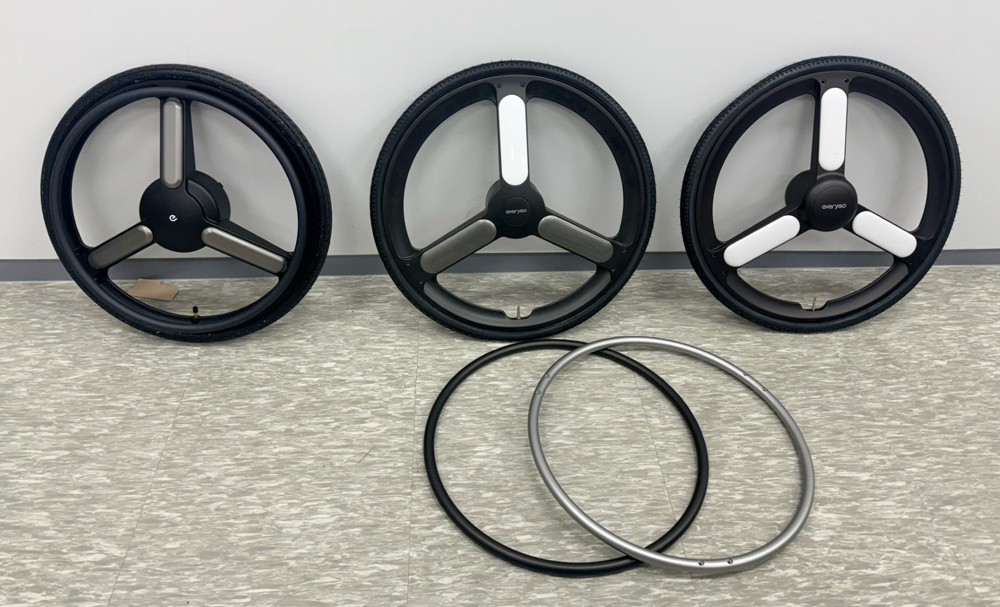
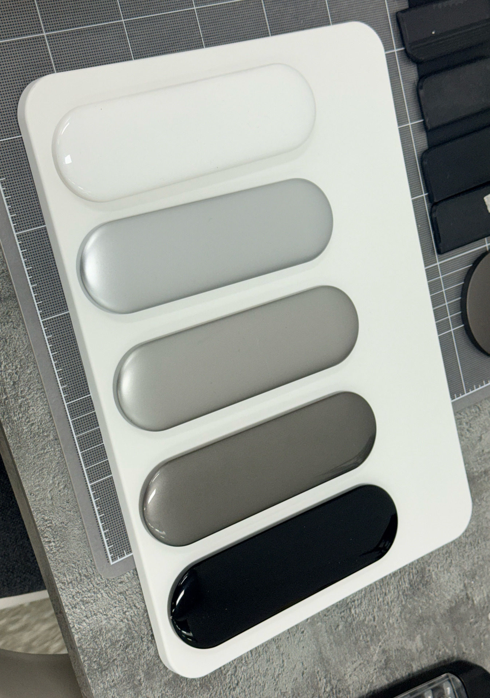
스포크 인서트 컬러와 핸드림 블랙 / 실버 마감을 실물 목업으로 비교하고, 컬러칩 5종으로 최종 컬러를 확인했습니다.
Insert colours and black / silver hand-rim finishes were compared on physical mock-ups and five colour chips.
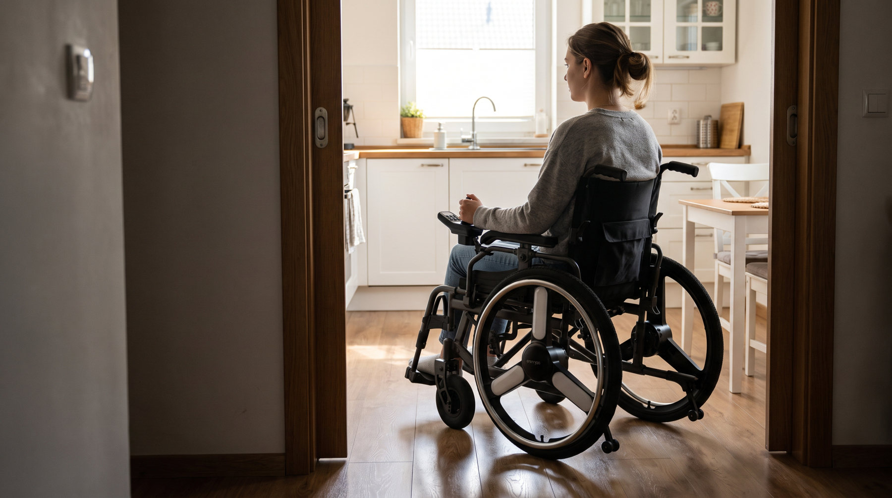